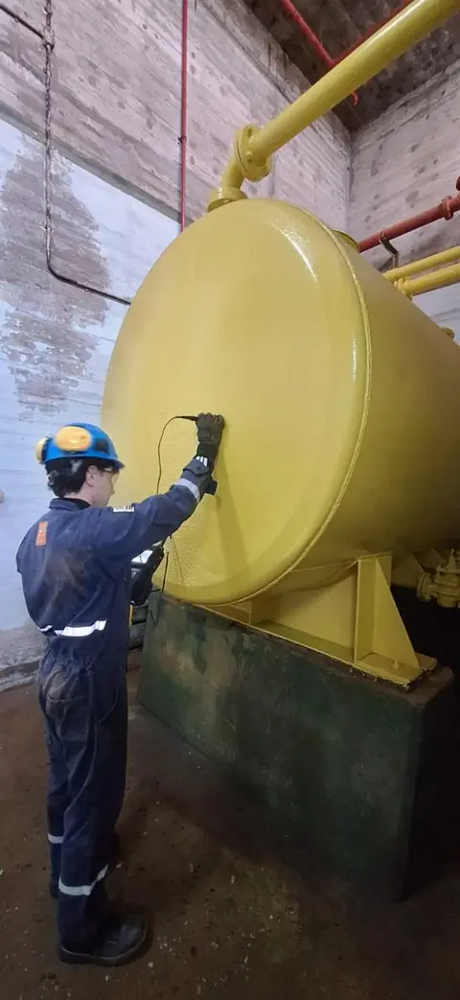

US
Ultrasonido Convencional
Técnica basada en la propagación de ondas sonoras de alta frecuencia a través del material para medir espesores con alta precisión y detectar discontinuidades internas o pérdida de material por corrosión/erosión.